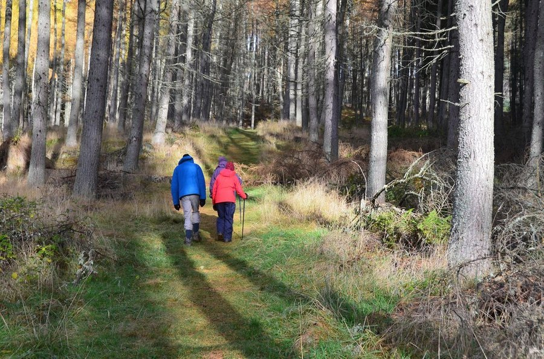

Houseplants and Focus: Can Greenery at Your Desk Improve Concentration?
A single potted plant seems too small a thing to change how well you work. A surprising amount of research has actually tried to test it.

Key takeaways
- Several studies link visible plants in a workspace to small improvements in attention, mood or perceived stress compared with plant-free settings.
- The effect size is modest, not dramatic. Plants are a minor supporting habit, not a substitute for sleep, breaks or a quiet workspace.
- The "plants purify office air" claim is overstated for typical desk setups. Meaningful air-cleaning research used far denser planting than most offices have.
- Even fake plants and nature images pick up part of the benefit, though real plants tend to score a bit higher on mood in direct comparisons.
- One easy-care plant within your line of sight is a reasonable, low-cost place to start.
Houseplants and focus is one of those pairings that sounds like wellness-aisle marketing until you look at the actual research, and then it turns out there's more to it than a trend. Multiple studies, in offices, classrooms and labs, have tested whether having a plant nearby changes how well people concentrate. The results lean modestly positive. They just don't support the bigger claims sometimes made about desk greenery transforming productivity.
Where does the "plants help focus" idea come from?
Much of it traces back to attention restoration theory, a framework from environmental psychologists in the 1980s proposing that natural elements, even small ones like a single plant, give the brain's directed-attention system a brief rest. The idea is that focused mental work is effortful and depletes attention over time, while glancing at something natural requires little effort and lets that system recover. It's the same theory behind research on walking in green spaces, which we cover in our guide to walking and brain health.
Office and classroom studies building on this idea have tested whether adding plants to a workspace changes measurable outcomes: task performance, reaction time, self-reported stress, and sometimes short-term memory or attention tasks. Several report a modest benefit for the plant condition. Others find effects mainly on mood and perceived comfort rather than hard performance numbers.
What does the evidence actually show about performance?
Taken together, the research is more consistent on subjective outcomes than objective ones. People in plant-present environments commonly report feeling calmer, less stressed and more satisfied with their space. Measurable gains in things like sustained attention or task accuracy show up in some studies but not all, and where they do appear, the size of the improvement tends to be small. That pattern is fairly typical for environmental interventions generally: a comfortable, pleasant space tends to help people feel and perform a bit better, but it isn't a substitute for the factors with a much larger research base behind them, like sleep quality and minimizing interruptions.
It's also worth being honest about limits in the research itself. Many of these studies are short, run in artificial lab settings, or can't fully separate the plant's effect from simply having a more pleasant-looking room. That doesn't erase the finding, but it does mean "houseplants sharpen your focus" is a stronger claim than the data cleanly supports.
COMPLEX
The memory formula we rate highest in 2026
A calmer workspace helps at the margins. For the recall side of the equation, look at ingredients with direct cognitive trial data. Advanced Memory Complex combines citicoline, bacopa, phosphatidylserine and B-vitamins with a 60-day guarantee.
See Today's Price →Do plants really clean the air enough to matter?
This is the part of the houseplant story that gets stretched the furthest. A well-known older experiment found that certain houseplants could remove some airborne chemicals in a sealed test chamber, and that finding has been repeated in headlines ever since as "NASA proved plants clean your air." The catch is scale: later analyses estimated it would take dozens of plants per square foot of floor space to match what a building's normal ventilation already does in an ordinary room. A couple of plants on a desk look nice and may offer a very small effect, but they are not doing meaningful air purification compared with simply opening a window or running a ventilation system, a distinction we also get into in our piece on air quality and brain fog.
Would a fake plant work just as well?
Partially, according to some of the research. Studies comparing real plants, artificial plants and plain photos of nature have found that even fake greenery and nature imagery produce some of the calming and mood benefits associated with real plants, likely because the visual and psychological effect matters more than any biological one for that piece of the puzzle. Real plants still tend to edge out artificial ones on self-reported mood and stress in direct comparisons, and they don't carry the same air-purification myth baggage either way. If a live plant isn't practical in your space, a well-placed photo or a low-maintenance artificial one is a reasonable substitute.
Is it worth adding a plant to your workspace?
Given the low cost and low downside, yes, it's a reasonable thing to try. Pick one easy-care plant, something like a pothos or snake plant that tolerates inconsistent light and watering, and place it where you'll actually see it while working rather than off to the side out of view. Don't expect it to replace sleep, structured breaks or a genuinely quiet workspace, which have far stronger evidence behind them for sustained attention. Think of it as one small input among several, alongside the habits covered in our guide to how to focus better.
The bottom line
Houseplants and focus have a real, if modest, research relationship. The calming and attention-restoring effect of having a plant in view shows up often enough in studies to take seriously, especially for mood and perceived stress. What doesn't hold up as well is the idea that a desk plant meaningfully purifies office air or functions as a standalone productivity fix. Treat a plant as a pleasant, low-cost addition to a workspace built on the fundamentals, not a shortcut around them.
Frequently asked questions
Do houseplants really improve focus and concentration?
Some studies find modest improvements in attention, mood or perceived stress with visible plants in a workspace. Effects tend to be small and inconsistent across studies, so plants are a minor boost rather than a proven concentration fix.
Do houseplants actually clean indoor air enough to matter?
A few plants remove some airborne pollutants, but the effect is far smaller than mechanical ventilation or an air purifier. Studies suggesting a meaningful benefit used far more plants per square foot than a typical desk or office has.
Do fake plants offer any of the same benefits?
Some research finds artificial greenery and nature images produce part of the calming effect associated with real plants, though real plants tend to score slightly higher on mood in head-to-head comparisons.
How many plants does a desk actually need?
There's no established number. Most supportive studies used one to a few plants within direct view, so a single easy-care plant in your line of sight is a reasonable starting point.
Want ingredients with real cognitive trials behind them?
Skip the guesswork. See the memory formulas our editors rate highest for 2026.
See the Top 5 Memory Formulas →Related: Air quality and brain fog · Standing desks and focus · How to improve your memory · Best memory formulas of 2026